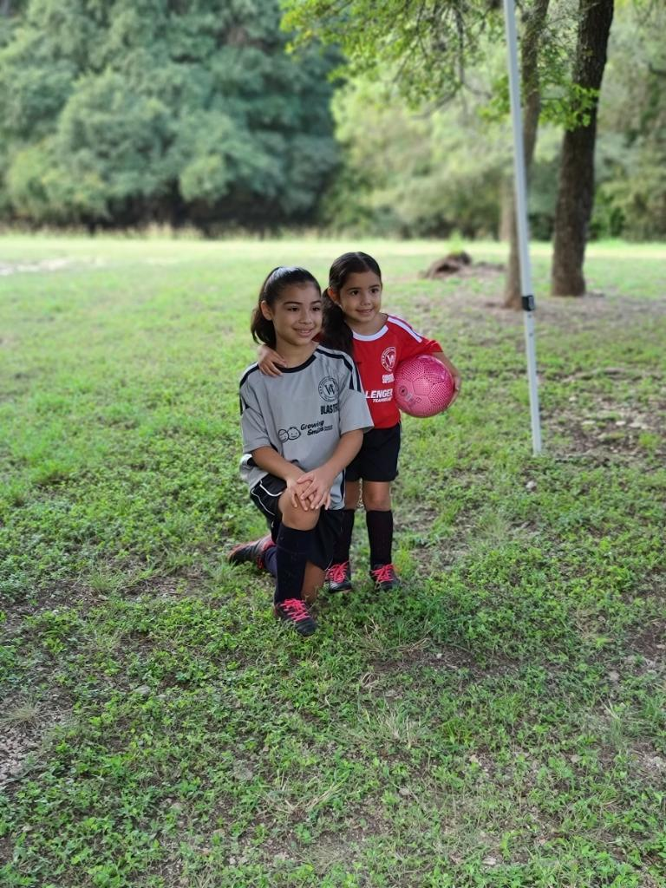

We all need time to unwind and relax, each person has their own way and grateful to show a couple of hobbies and company time I enjoy to do.
Traveling
Over the years if given the free time, traveling has been a key part in my life. Been able to travel to other cities and a couple other countries. Along the way, get to make friends and experience a different lifestyle or culture. It brings a relaxing and exciting experience that makes you look forward to the next you can visit in the world!
Family
My family is very impotant to me and bring posivity whenever we're together. We enjoy each other's company and making memories together, either when celebrating holidays or birthdays. Whenever there's a stressful time, can easily rely on them to make things better and also being with my nieces easily puts a smile on my face. The moments with my nieces easily bring joy and comfort, the free time spent with them makes an entertaining time.
Sports
Growing up sports has always been a big part of my life, either watching or playing them. While not being able to play them as much anymore, being able to watch them and discuss about sports is a daily basis with friends. Being in a city with a basketball team, if a time to unwind, then would go with friends to see a game live. While can visit a city close by, have the chance to see two of my cousins play college baseball or football. Being around these chances of watching sports, eases my mind and enjoy those opportunities.

Learning Languages
A short fact about me is that I like to learn languages! If given a moment, have been improving my Spanish and Mandarin. It's a fun challenge I give to myself that I've been practicing over the years and the satisifaction whenever the improvement is noticeable!